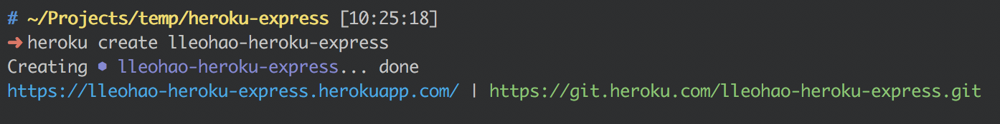
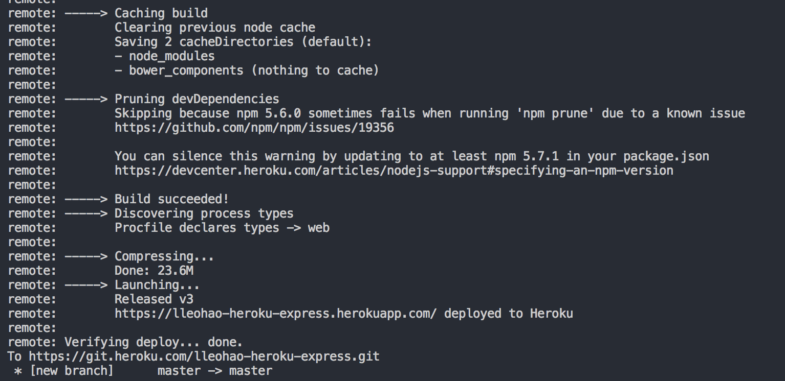

尝试使用了下Heroku, 在上面部署 Node 程序还是很方便的, 主要优势在于它的网络可以访问到外网, 具体应用都懂得
这里记录下如何在 Heroku 上创建、开发、部署 Node
安装 Heroku cli
其余的访问 下载地址
创建一个 Express 应用
使用Yeoman和generator-express来快速创建一个 Express 应用
1 | // 安装 yeoman |
测试一下刚刚创建的项目
1 | // 启动 Express |
访问 http://localhost:3000/ 查看 Express 是否成功启动
在 Heroku 上创建项目
进入我们刚刚新建的项目, 运行 create 指令创建项目
1 | heroku create [your_app_name] |
运行完成后, Heroku 会在我们的项目上新建一个git 的远程分支, 同时会为项目创建一个域名供我们访问
这里是我的运行结果
在 Heroku 上部署应用
部署之前我们需要创建一个类似启动脚本的文件 Procfile
1 | // Profile |
这个文件告诉 Heroku需要创建一个web 容器, 同时执行 node ./bin/www 来启动程序
我们的项目只需要这样就可以了, 更多的详细信息在这里 Process Types and the Procfile
然后将刚刚的改动提交, 同时推送的 Heroku
1 | git add . |
当你将代码推送到 Heroku 的 master 分支上时, 它就会根据package.json中的内容安装所需要的依赖, 然后执行 Procfile 中的内容, 这就完成的程序的部署
这里是我的部署结果

然后你在访问刚刚 Heroku 给的网址, 就可以看到程序已经运行
定义程序依赖和运行变量
通过
package.json定义程序依赖1
2
3
4
5
6
7
8
9
10
11
12
13
14
15
16
17{
"name": "heroku-express",
"version": "0.0.1",
...
"dependencies": {
"express": "^4.13.3",
"serve-favicon": "^2.3.0",
"morgan": "^1.6.1",
"cookie-parser": "^1.3.3",
"body-parser": "^1.13.3",
"swig": "^1.4.2"
},
...
"engines": {
"node": "^8.3.0"
}
}dependencies 字段定义程序依赖
engines 字段定义需要的 Node 版本
定义运行变量
本地运行变量
本地使用
.env文件来定义变量, 格式如下1
NAME=VALUE
使用
heroku local web来启动本地开发服务器, 同时会将变量信息注入到process.env中容器运行变量
容器的运行变量需要通过
heroku config:set NAME=VALUE来设置使用
heroku config来查看变量
与容器进行远程交互
查看运行日志
1
heroku logs --tail
在容器中运行命令
heroku run commandheroku run node进入Node 的 REPLheroku run bash进去容器运行bash
其他
Heroku 的免费版本每个月提供了 550 小时的使用时间, 当我们的程序半个小时内没有访问流量时就会被休眠掉, 在下次被访问的时候激活
所以长时间没有访问的应用, 在第一次访问会很慢, 不过也就够用了
我也将这篇文章部署在这个应用上, https://lleohao-heroku-express.herokuapp.com/article